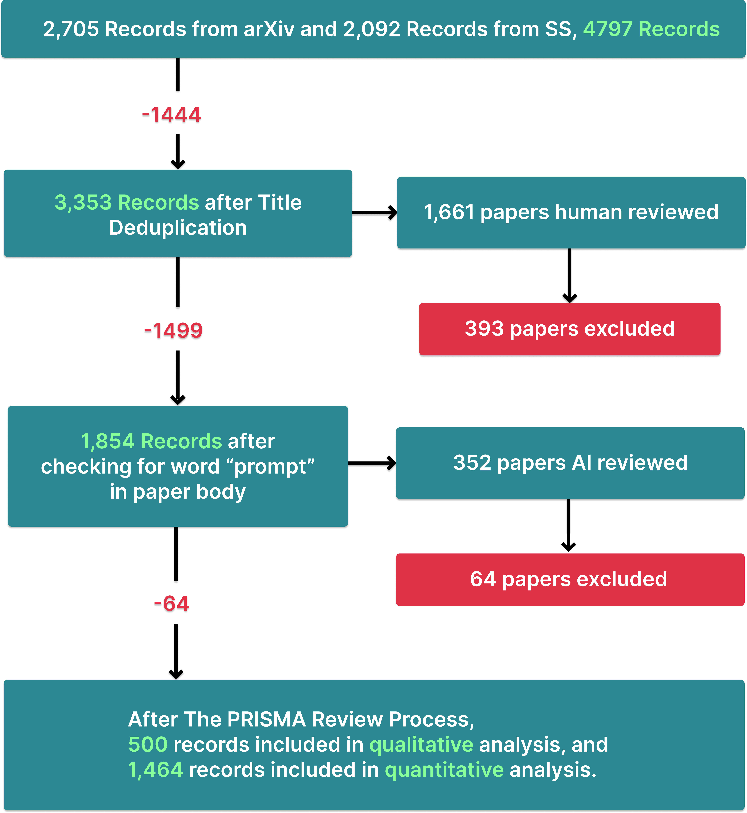
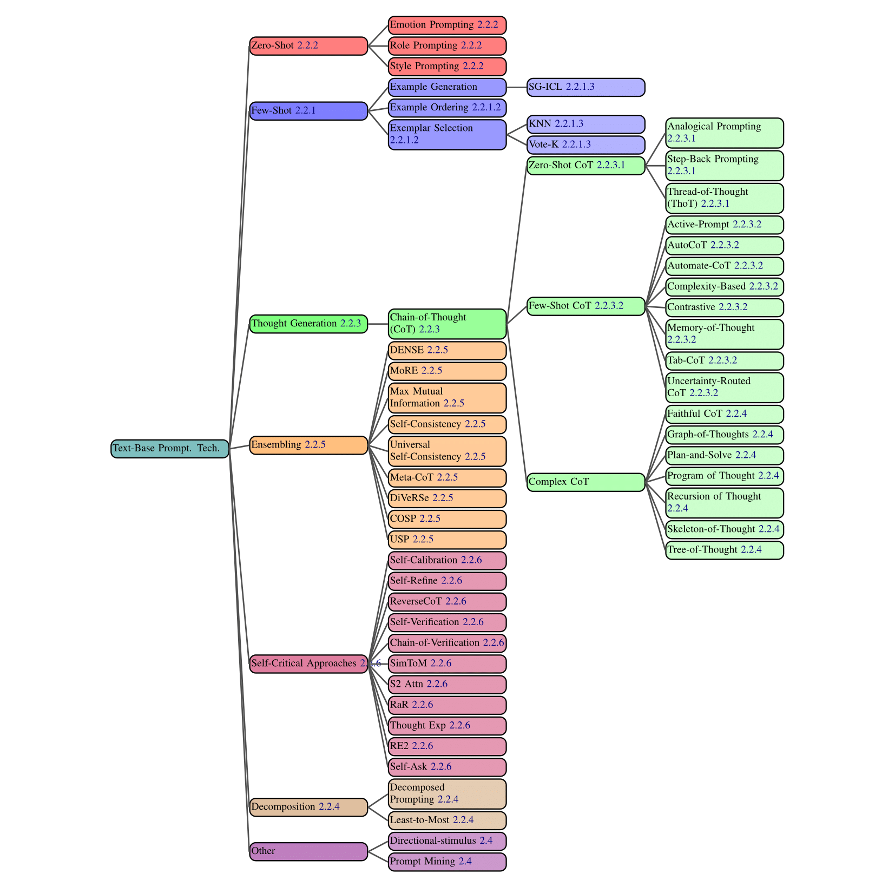
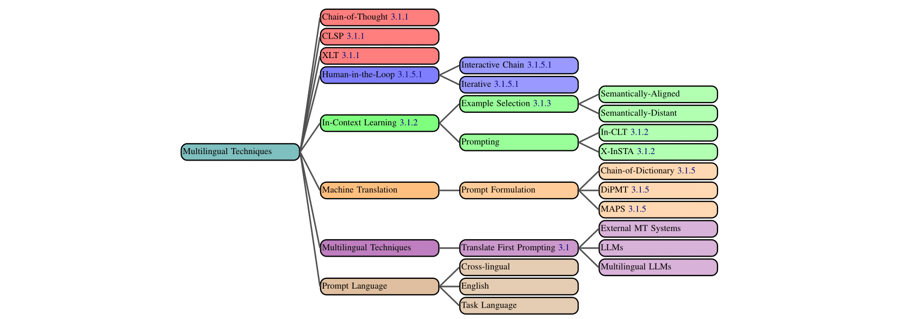
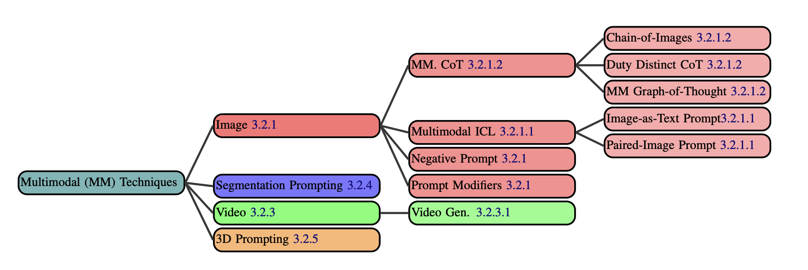
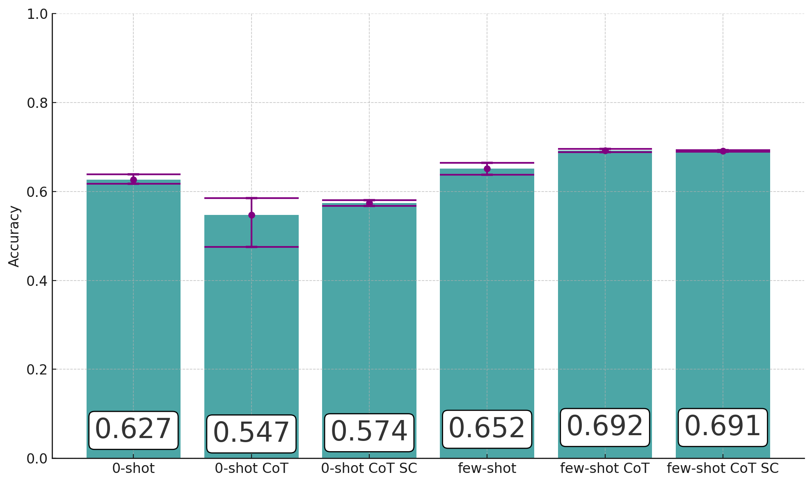
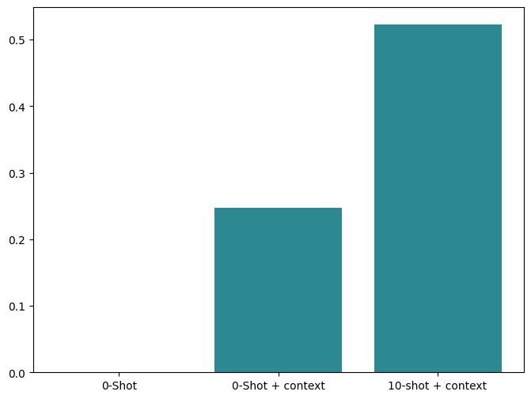

Abstract
Generative Artificial Intelligence (GenAI) systems are being increasingly deployed across all parts of industry and research settings. Developers and end users interact with these systems through the use of prompting or prompt engineering. While prompting is a widespread and highly researched concept, there exists conflicting terminology and a poor ontological understanding of what constitutes a prompt due to its due to the area’s nascency. This paper establishes a structured understanding of prompts, by assembling a taxonomy of prompting techniques, and analyzing their use. We present a comprehensive vocabulary of 30 vocabulary terms, a taxonomy of 53 text-only prompting techniques, as well as 50 techniques for other modalities. We further present a meta-analysis of the entire literature on natural language prefix-prompting.
The PRISMA Review Process
During paper collection, we followed a systematic review process grounded in the PRISMA method. We first scraped arXiv and Semantic Scholar through a keyword search. Our keyword list was comprised of 44 terms, with each being closely related to prompting and prompt engineering. We then deduplicated our datset based on paper titles, conducted extensive human and AI review for relevance, and automatically removed unrelated papers by checking paper bodies for the term "prompt".
Figure 2.1: The PRISMA review process. We accumulate 3,353 unique records from which we extract 1,464 relevant records.
A Taxonomical Ontology of Prompting Techniques
We present a comprehensive Taxonomical Ontology of prompting techniques, methods for instructing Large Language Models (LLMs) to complete tasks. We divide prompting techniques into three categories: text-based, multilingual, and multimodal. Multilingual techniques are used to prompt LLMs in non-English settings. Multimodal techniques are used when working with non-textual modalities such as image and audio.
Figure 2.2: All text-based prompting techniques from our dataset.
Figure 3.1: All multilingual prompting techniques.
Figure 3.2: All multimodal prompting techniques.
Case Study: MMLU Benchmarking
In our first case study, we benchmark six distinct prompting techniques using the MMLU benchmark. We also explore the impact of formatting on results, finding varied results between two different formats for each prompting technique.
Figure 6.1: Accuracy values are shown for each prompting technique. Purple error bars illustrate the minimum and maximum for each technique, since they were each ran on different phrasings (except SC) and formats.
Case Study: Labelling for Suicide Crisis Syndrome (SCS)
In the second case study, we apply prompting techniques to the task of labelling reddit posts as indicative of suicide crisis syndrome (SCS). Through this case study, we aim to provide an example of the prompt engineering process in the context of a real world problem. We utilize the University of Maryland Reddit Suicidality Dataset and an expert prompt engineer, documenting the process in which they boost output accuracy from 0% to 55%.
Figure 6.2: Entrapment Scores
The Prompt Report Dataset
Our systematic review of all prompting techniques is based on the dataset of 1,464 relevant papers we collected. Below is a preview of the dataset. Specific columns, such as 'abstract', have been excluded. The full dataset is available on Huggingface, including the complete CSV file and all paper PDFs.
We conducted several analyses of the dataset which can be found within the paper, including an analysis of citation counts for different GenAI models, prompting techniques, and datasets. For example, the following is a graph depicting connections between citations within the dataset.
Figure 2.7: A citation graph of our dataset identifying connections between papers. We collected a reference count of every paper in our dataset and created an adjacency matrix with edges only going to papers within our dataset.
BibTeX
@inproceedings{
[citation information here]
}